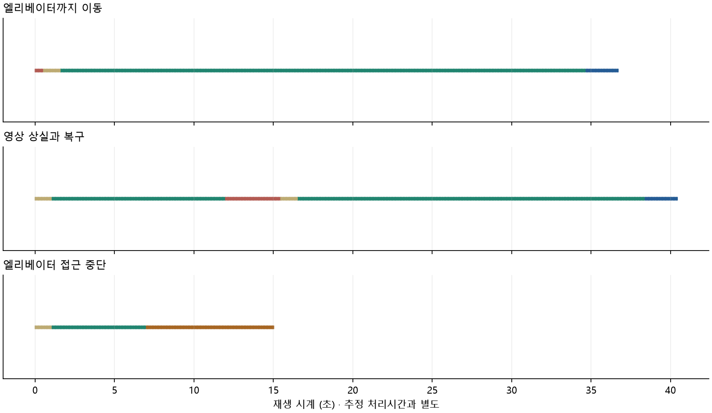

공식 자료에서 확인한 연결
1·10번 출구 측 → B1 대합실·개찰구 → 역삼·교대 방면 내부 엘리베이터 → B2 승강장. 계단 없는 동선의 순서를 등록했습니다.
서울교통공사 시설 목록 ↗KRIC 공개 이동 경로 ↗
2 GANGNAM STATION
강남역의 출발점과 목적지를 고르고, 안내가 멈췄을 때의 동작을 살펴보세요.
INTERACTIVE WALK / B2
복도에서 엘리베이터 앞까지. 방향을 바꾸고, 안내가 끊겼을 때의 동작을 시험합니다.
화면을 누른 뒤 방향키 / WASD
↑↓ 전후 이동 · ←→ 회전 · A D 옆으로 이동
버튼을 짧게 누르면 한 걸음, 길게 누르면 계속 이동
강남역 공개 자료의 약 22 m 이동 축을 참고한 합성 공간입니다. 이 탭은 가상 카메라 좌표로 위치 관측을 만들어 안내 동작을 시험합니다. 영상 인식 정확도나 현재 강남역의 통행 가능성을 검증하는 화면이 아닙니다.
직접 이동: 브라우저의 3D 카메라를 조작하고, 체험 시계로 약 0.45초마다 모의 관측을 생성합니다. 관측 3개를 받은 뒤 안내를 표시합니다. 위치 상실·접근 중단·일시정지·탭 전환 시 기존 안내는 숨깁니다. 화살표와 거리는 마지막으로 확인한 관측을 기준으로 계산합니다.
실행 영상: Unity에서 렌더링한 RGB를 RootSIFT/PnP로 처리한 실제 위치 추정 결과를 재생합니다. 두 화면의 결과는 서로 다른 실험이며 정확도 수치를 합치지 않습니다.
브라우저의 벽 충돌과 도착 범위는 체험용 설정입니다. 실제 역의 폭·경사·시설 상태와는 무관합니다. 화면을 떠나면 일시정지되며, 다시 시작할 때 위치를 재확인합니다.
가상 공간 설정 · 3D 라이브러리 이용 조건WALKTHROUGH / SYNTHETIC STATION
강남역 B2의 기록된 이동 축을 참고한 가상 공간. 실제 Unity 실행 장면을 재생합니다.
참고 이동 축 약 22 m · 가상 카메라 높이 1.2 m

초록: 안내 · 파랑: 도착 · 붉은색: 위치 불확실 · 옅은 갈색: 재확인 · 진한 갈색: 접근 중단
입력: 직접 제작한 3D 장면의 RGB 영상. 계산: RootSIFT 특징과 지도 대응 → PnP 위치·방향 → 경로·안내 상태. 정답 카메라 좌표는 오차 평가에만 사용합니다.
자동 이동은 미리 정한 경로를 따라가는 가상 사용자 동작입니다. 영상 추정이 불확실하면 이동과 화살표 표시를 멈춥니다. 자율주행이나 실제 휠체어 사용성 검증은 아닙니다.
복도 폭·천장·문·안내판은 합성 설정입니다. 현재 강남역의 모습·시설 운행·통행성을 재현했다고 볼 수 없습니다. 합성 실험과 공개 강남역 사진의 성능은 별도로 평가합니다.
영상은 15 fps로 재생합니다. 위치 추정은 약 0.533초의 실험 시계 간격으로 수행했으며, 실제 요청 처리시간은 옆 기록에 표시합니다. 실시간 모바일 AR 성능을 뜻하지 않습니다.
실험 집계 · 프레임별 기록 · Unity 직접 조작·재현 방법 ↗B2 / OBSERVED CORRIDOR
공개 영상에 기록된 짧은 승강장 구간을 체험합니다. 사진과 위치는 과거 기록이며 현재 휴대폰의 위치가 아닙니다.
REGISTERED PATH
지도용 촬영 경로에 관측지점 3개를 등록했습니다. 엘리베이터 앞 지점은 문과 B1/B2 표지가 보이는 원본 사진으로 확인한 촬영 위치이며, 문턱을 측량한 좌표는 아닙니다.
단일 사진의 품질 검사와 동선에서 3 m 이내 여부를 검사하고, 일관된 관측 3개 후에 안내를 표시합니다. 이 조건은 연구용 설정이며 위치의 정답을 보장하지 않습니다.
통행 폭·경사·현재 시설 상태는 미확인입니다. 해당 엘리베이터의 현재 호기 및 출입구 동선과의 연결은 아직 확정하지 않았습니다.
동선 등록 근거 ↗처음에는 연속 검사를 통과한 관측부터 표시합니다. 전체 촬영 순서와 실패 사례도 확인할 수 있습니다. 사례 선택 기준은 추정값이며 정답 위치를 사용하지 않습니다.
경로를 바꿔도 기록 영상의 촬영 방향은 그대로입니다. ‘위치 상실 주입’은 시험 조건이며, 재개 후 다음 관측부터 다시 검사합니다. 엘리베이터 탑승·층 이동은 ‘출입·층 이동’의 가상 관측 체험에서 확인하세요.
ROUTE OVERVIEW
연결 순서를 표현한 도식 · 실제 거리·방향·복도 모양과 다름
GUIDANCE PREVIEW
이동 체험은 가상 관측으로 안내 상태를 검사합니다. 실제 추정값과 짧은 접근 경로의 연결은 ‘영상 기반 접근’, 정답이 있는 평가 사례는 ‘성능 살펴보기’에서 확인합니다.
VISUAL LOCALIZATION
강남역 B2 공개 이미지에 실제 실행한 위치 인식 결과입니다. 사진 선택 시 저장된 추정값을 불러옵니다.
이 좌표는 NAVER 데이터의 좌표계입니다. 위 시설 도식과의 대응이 확인되지 않아 시설 도착 판정에는 사용하지 않습니다.
SIFT 특징 → 사전학습 LightGlue 대응 → PnP 위치·방향 계산. 정답 위치는 이 화면의 추정 입력에 포함되지 않습니다.
선별된 12장은 사례 탐색용입니다. 성능은 아래의 전체 450장 평가로 확인하세요. 선택한 출발점·목적지에 따라 사진이 새로 생성되지는 않습니다.
EVIDENCE & LIMITS
1·10번 출구 측 → B1 대합실·개찰구 → 역삼·교대 방면 내부 엘리베이터 → B2 승강장. 계단 없는 동선의 순서를 등록했습니다.
서울교통공사 시설 목록 ↗450장 재사용 평가에서 RootSIFT 최근접 매칭 → 사전학습 LightGlue의 0.5 m·5° 이내 비율은 40.0% → 45.1%. 수용 중 5 m 초과 오차도 91/249 → 113/329로 증가했습니다. 접근 체험의 추가 test 영상 67장은 정답이 없어 정확도를 채점하지 않았습니다.
전체 실험 집계 보기 ↗현재 운행 상태, 폭·경사, 현장 통행성, 영상 속 엘리베이터의 현재 호기와 공식 출입 동선의 연결. 영상은 2019년 자료이며, 현장 사용자 평가와 실시간 휴대폰 AR은 수행하지 않았습니다.
자료 출처와 이용 조건 ↗